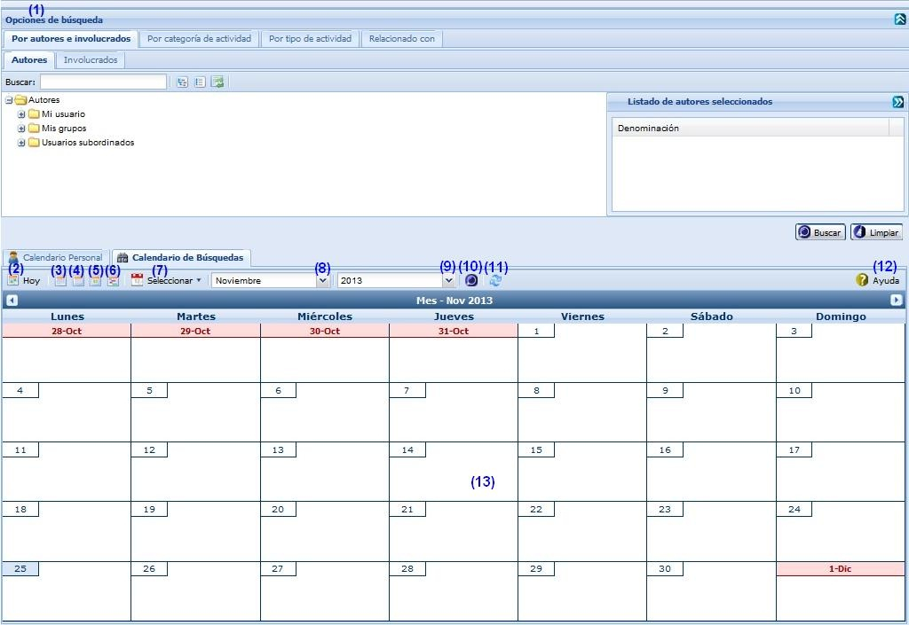
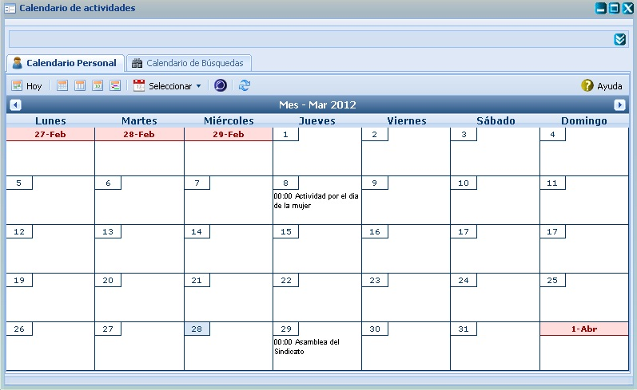
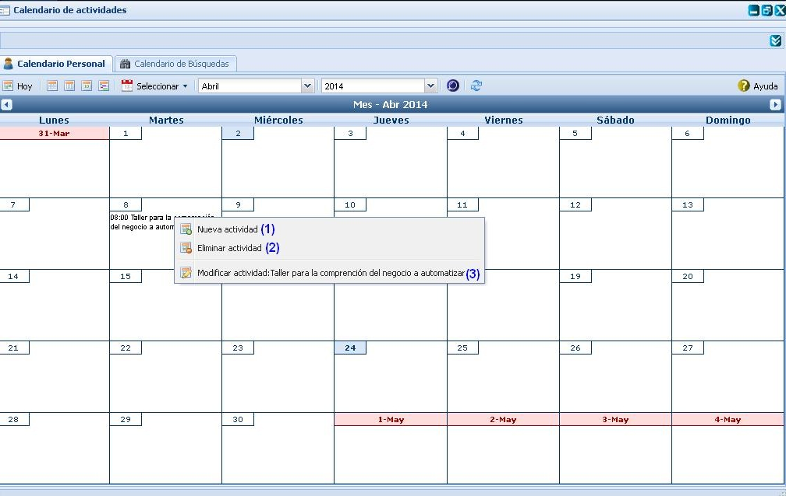
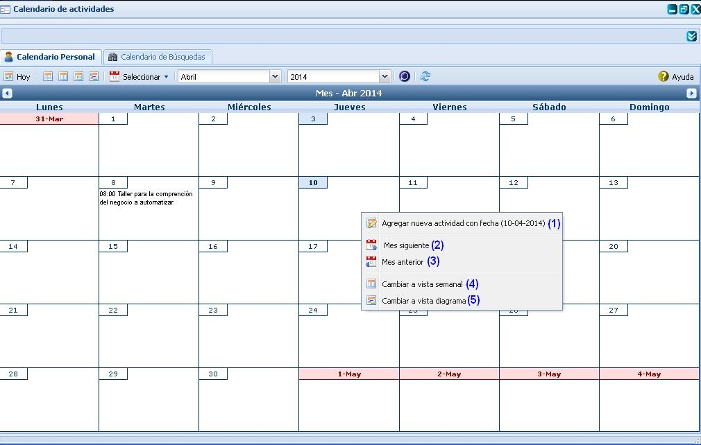
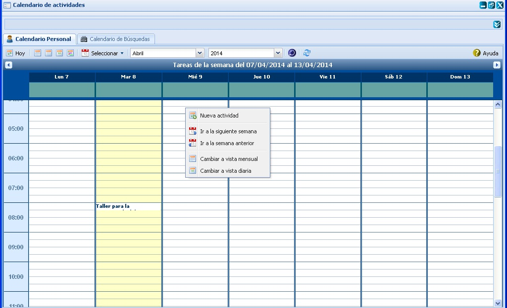
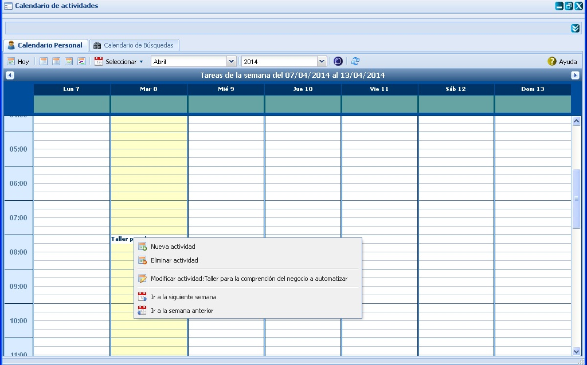
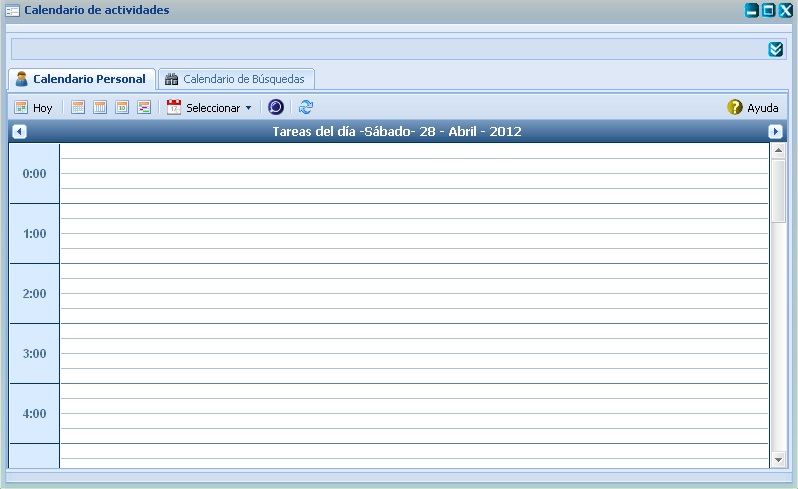
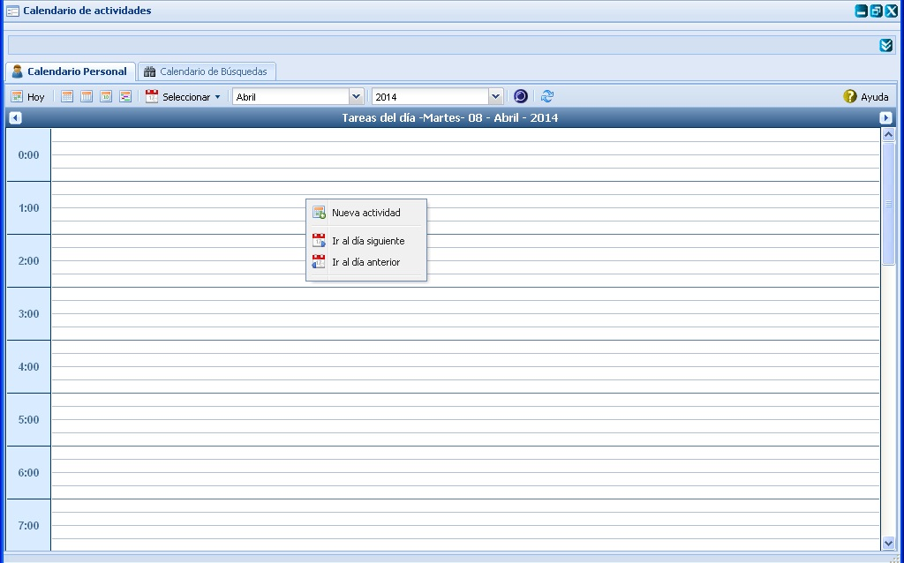
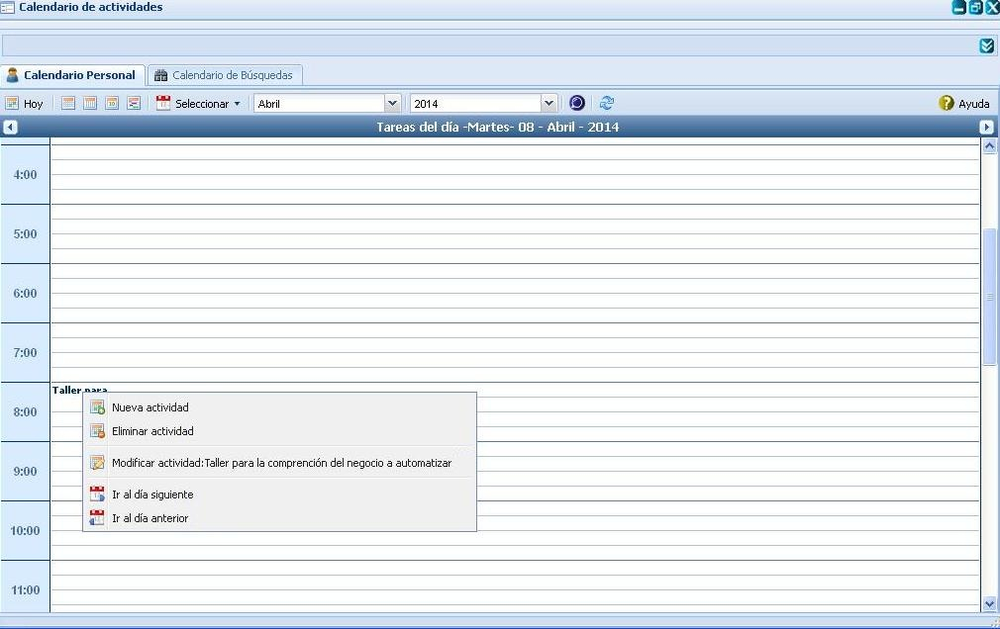
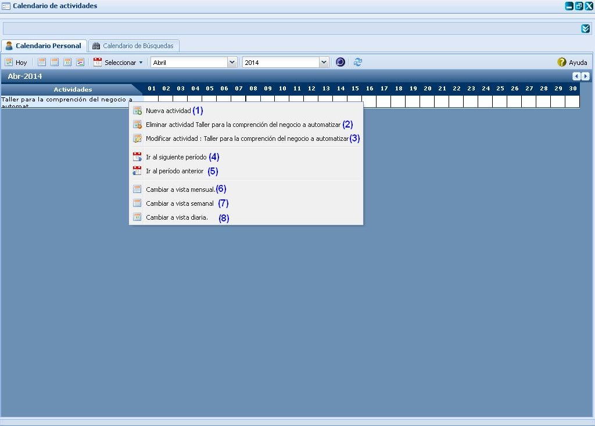

Figura 2. Interfaz y acciones de la vista de Hoy.
--Calendario de actividades --
Esta funcionalidad permite realizar la configuración en el Calendario de actividades necesarias para la gestión de planificación de actividades. Para acceder a estas funcionalidades el usuario debe estar autenticado y debe seleccionar la ruta: Inicio/Planificación/Planificación de actividades /Planeación/Actividades. Esta interfaz contiene dos secciones horizontales. En la parte superior se muestra el panel para filtro, el cual posibilita realizar las operaciones de búsqueda, y en la parte inferior se muestran las pestañas nombradas Calendario Personal y Calendario de búsqueda, ver Figura 1.
Nota: El panel Opciones de búsqueda, que es donde se efectúan los filtros, inicialmente estará oculto, para habilitarlo deberá dar clic en el botón con doble saeta que se encuentra en la parte superior derecha de la interfaz.
La pestaña Calendario Personal mostrará las actividades registradas en el sistema a través de diferentes vistas: Mensual, Semanal, Diaria y Diagrama.

Opciones de búsqueda
En la interfaz Calendario de actividades con su panel Opciones de búsqueda se muestra activado el botón Buscar. Para realizar una búsqueda de actividades seleccione los datos por los que se va a realizar la búsqueda por filtro. Si desea realizar una búsqueda en la que se muestre como resultado las actividades de determinados involucrados, categorías de la actividad, tipos de actividad o relaciones, realice la selección en los árboles que se muestran en las pestañas Por autor e involucrados, Por categoría de la actividad, Por tipo de actividad y Relacionado con. Se pueden realizar selecciones múltiples en cada pestaña. Una vez especificados los parámetros de búsqueda, puede presionar el botón Aceptar para que el sistema realice la búsqueda. Los resultados se mostrarán en la pestaña Calendario de búsqueda o Calendario personal, en dependencia de cuál de ellos tenga activo en esos momentos.
En cada una de las pestañas ubicada en el panel Opciones de búsqueda se muestran los botones Expandir todas las agrupaciones y Colapsar todas las agrupaciones mediante los cuales puede acceder a las funcionalidades. Estos botones tienen la función de desplegar y contraer la lista de involucrados, de categorías de la actividad, de tipos de actividad o de relaciones respectivamente según sea el caso. Si desea expandir una lista deberá dar clic sobre el botón Expandir, de lo contrario, si lo que desea es contraer una lista deberá dar clic sobre el botón Contraer.Hoy
En la interfaz Calendario de actividades tanto en la pestaña Calendario Personal como en la pestaña Calendario de búsqueda podrá observar que se muestra activado el botón Hoy, el cual realiza la misma funcionalidad en cada una de estas pestañas. Presione el botón Hoy y se mostrará en la pestaña actual una nueva vista de calendario de la fecha actual en correspondencia con el tipo de vista de calendario en que se encontraba en el momento en que ejecutó esta operación, pudiendo mostrar las actividades planificadas para el mes actual, la semana actual, o el día actual según sea el caso.
Nota: Sobre cada una de las actividades mostradas en la vista se podrán realizar diferentes opciones, ver Figura 2.
Figura 2. Interfaz y acciones de la vista de Hoy.
Nota: es importante tener en cuenta que la vista anteriormente expuesta le brindará la posibilidad de insertar actividades, sin tener la necesidad de ir a la vista de Registro de actividades para adicionar una actividad en un día en específico. Además de permitir cambiar de páginas, es decir ir a una página siguiente y una página anterior, ver Figura 3.

Figura 3. Interfaz y acciones de la vista de Hoy.
Cambiar a Vista Mensual
En la interfaz Calendario de actividades tanto en la pestaña Calendario Personal como en la pestaña Calendario de búsqueda podrá observar que se le muestra activado el botón Cambiar a vista mensual el cual realiza la misma funcionalidad en cada una de estas pestañas. Podrá dar clic sobre el botón Cambiar a Vista Mensual y se le muestra en la pestaña actual una nueva vista de calendario con la planificación de actividades para un mes específico en la cual podrá observar una tabla de siete columnas correspondientes a los siete días de la semana comenzando de domingo al lunes y cinco filas que representan a su vez las cinco semanas que puede contener, como máximo, un mes. En la intersección de una columna y una fila se representan las actividades de un día del mes. Ver Figura 4.

Nota: sobre cada una de las actividades y días mostrados en cada una de las celdas mostradas en la vista mensual se podrán efectuar diversas acciones, tales: Adicionar, Modificar y Eliminar una determinada actividad o insertar directamente una actividad al calendario sin necesidad de adicionar por la interfaz de Registro de actividades. Para más detalle, ver Figuras 5 y 6.

Nota: es importante tener en cuenta que sobre cada una de las actividades mostradas en esta vista se podrán efectuar acciones de modificación y eliminación, y que solo podrá ejecutar esta acción en dependencia de los permisos que le hayan sido asignados sobre las mismas, de lo contrario solo podrá visualizarlas

Nota: Es importante tener en cuenta que al dar doble clic sobre cualquier día de la semana de los mostrados en la vista semanal, el sistema le mostrará automáticamente la vista de Hoy con cada una de las actividades que fueron planificadas para el día enmarcado.
Cambiar a vista semanal
En la interfaz Calendario de actividades tanto en la pestaña Calendario Personal como en la pestaña Calendario de búsqueda podrá observar que se le muestra activado el botón Cambiar a vista semanal el cual realiza la misma funcionalidad en cada una de estas pestañas. Podrá dar clic sobre el botón Cambiar a Vista Semanal y se le mostrará en la pestaña actual una nueva vista de calendario con la planificación de actividades para una semana específica en la cual podrá observar siete columnas correspondientes a los siete días de la semana comenzando de domingo al lunes. Con el color amarillo estará sombreada la columna correspondiente a la fecha actual, ver Figura 7.

Las diferentes opciones que conforman la figura anterior permiten:
Nota: es importante tener en cuenta que sobre cada una de las actividades mostradas en esta vista se podrán efectuar acciones de modificación y eliminación, y solo podrá realizar estas funciones en dependencia de los permisos que le hayan sido asignados sobre las mismas, de lo contrario solo podrá visualizarlas, ver Figura 8.

Cambiar a vista diaria
En la interfaz Calendario de actividades tanto en la pestaña Calendario personal como en la pestaña Calendario de búsqueda podrá observar que se le muestra activado el botón Cambiar a vista diaria el cual realiza la misma funcionalidad en cada una de estas pestañas. Podrá dar clic sobre el botón Cambiar a vista diaria y se le mostrará en la pestaña actual una nueva vista de calendario con la planificación de actividades para una día específico, en la cual podrá observar una columna alineada a la izquierda que representa la cantidad de horas del día en las cuales se pueden planificar las actividades. Al representar una actividad planificada en la vista diaria, lo hará en forma de columna y las ubicará a continuación de la columna de horas, creando una columna por separado para cada actividad. Podrá notar una correspondencia entre los valores de la columna: horas con el inicio y el fin del espacio ocupado por la barra que represente a una actividad. Esta correspondencia es una representación gráfica de la hora de inicio y la hora de fin de una actividad determinada enmarcada en la fecha que representa la vista diaria, ver Figura 9.

Nota: en la interfaz expuesta con anterioridad se podrán adicionar actividades sin necesidad de insertar las mismas mediante la vista de Registro de actividades, para ello deberá presionar clic derecho (secundario) sobre una hora de las mostradas y seleccionar la opción Nueva actividad, ver Figura 10. Esta permite además efectuar acciones de modificación o eliminación sobre actividades ya creadas, es importante tener en cuenta que sobre cada una estas actividades se podrán efectuar acciones de modificación y eliminación, y solo podrá ejecutarla en dependencia de los permisos que le hayan sido asignados sobre las mismas, de lo contrario solo podrá visualizarlas, ver Figura 11.


Cambiar a Vista Diagrama
En la interfaz Calendario de actividades tanto en la pestaña Calendario personal como en la pestaña Calendario de búsqueda podrá observar que se le muestra activado el botón Cambiar a vista diagrama el cual realiza la misma funcionalidad en cada una de estas pestañas. Podrá dar clic sobre el botón Cambiar a vista diagrama y se le mostrará en la pestaña actual una nueva vista de calendario con la planificación de actividades para un día específico, en la cual podrá observar un listado de las actividades planificadas en un mes y las repeticiones que puede presentar dicha actividad en cada día del mes, ver Figura 12.

Las diferentes opciones que conforman la figura anterior permiten:
Nota: es importante tener en cuenta que sobre cada una de las actividades mostradas en esta vista se podrán efectuar acciones de modificación y eliminación, y que solo podrá ejecutar esta acción en dependencia de los permisos que le hayan sido asignados sobre las mismas, de lo contrario solo podrá visualizarlas.
Seleccionar
En la interfaz Calendario de actividades tanto en la pestaña Calendario Personal como en la pestaña Calendario de búsqueda podrá observar que se le muestra una lista desplegable que presenta por defecto el valor seleccionar, dicha lista realiza la misma funcionalidad en cada una de las pestañas mencionadas. Podrá seleccionar una fecha y se le mostrará en la pestaña actual una vista de calendario que mostrará las actividades planificadas en la fecha seleccionada.
Por otro lado, en cada una de diferentes vistas de calendario que se muestran en las pestañas Calendario Personal y Calendario de Búsqueda se pueden realizar varias operaciones sobre las actividades representadas en estas vistas de calendario como se muestra en la figura 10. Para esto es necesario dar clic secundario en un espacio en blanco del interior de cualquiera de las vistas de calendario que muestra el sistema o sobre cualquier actividad listada en la misma, como se expone en cada una de las descripciones de las vistas mencionadas con anterioridad.
Otra de las funcionalidades que permite realizar el sistema en cada una de las diferentes vistas de calendario que se muestran en las pestañas Calendario Personal y Calendario de Búsqueda es la posibilidad de desplazarse por los calendarios anterior y siguiente de una vista a través de los botones en forma de saeta ubicados en la parte superior de dichas pestañas en la barra nombrada Tareas. Mediante estos podrá consultar las actividades planificadas para el mes anterior o siguiente del mes de la vista actual, para la semana anterior o siguiente de la semana actual, para el día anterior o siguiente al día actual o para el cronograma anterior o siguiente del cronograma actual. Lo anterior se realizará según la vista del tipo Mensual, Semanal, Diaria o de Cronograma que esté habilitada respectivamente.